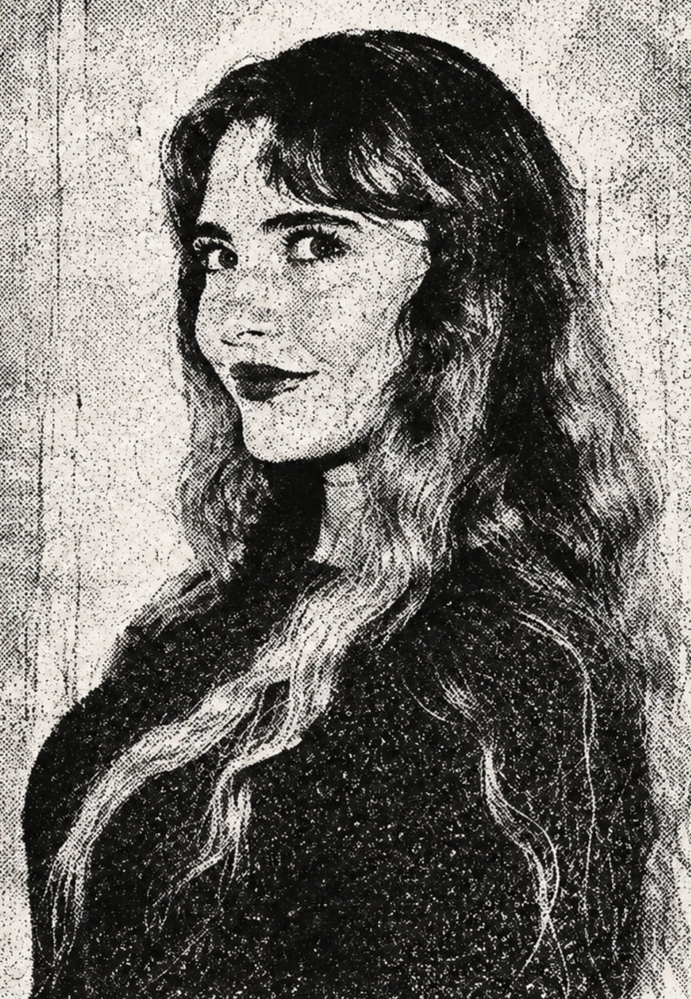
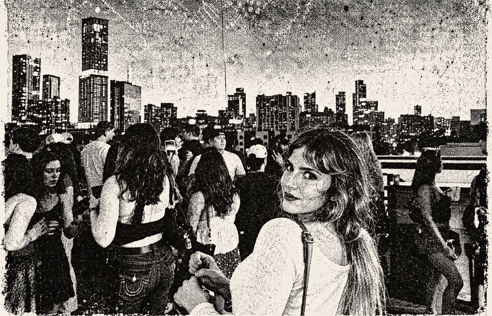

Work, lifestyle, and everyday stories — a place for creativity and connection. See more of Teicheir and what she can do for you!

Gaming · Lifestyle · Photography Through the Teicheir lens.
At ACL, behind the scenes
At ACL, I stepped into the festival as press, bringing the same curiosity that shapes my creative work. Live events are full of stories: the energy of a crowd, the setting, and the small details that make a moment feel like it belongs to a place. My aim is to carry that atmosphere into visual content that feels personal and connected. The experience brought my interests in media, live photography, and storytelling together. This digital archive is a home for that perspective, alongside my design work, lifestyle content, and ideas for what comes next.
Behind the Content
One creator. Different sides.
Gaming, lifestyle, and creative stories through the Teicheir lens.
Inside the Edit

Event Marketing & Planning from the Teicheir lens.
Press play.
Gaming, vlogs, and short videos — find the latest on my channels.
Design, photography, gaming, and everyday stories — a little look at the person behind Teicheir.
What inspires your work?
I love nostalgia and the little details people might walk past. Old magazines, early internet spaces, a good photo — I like putting those feelings together and making something that feels like me.
What do you enjoy creating?
Honestly, a little bit of everything. Photos, videos, design, and everyday stories. I like having room to experiment instead of fitting all my interests into one box.
What should people know about working with you?
I want the work to have personality. Bring me your idea, and let’s figure out how to tell the story in a way that feels thoughtful, visual, and connected.
Why bring everything into one digital archive?
I have a lot of interests, and I want a space where they can live together. The internet, design, photos, gaming — they all feed into the way I see things. This archive gives people a little window into that.
What makes a story catch your eye?
Usually a feeling or a detail. A place with personality, an unexpected color, or a moment that makes me stop and look again. I like finding a perspective that makes something familiar feel a little different.
How would you start a new collaboration?
With a conversation. Tell me what you're imagining and what you want people to feel. I love the idea of brainstorming over coffee, sharing references, and turning those little ideas into something we can create together.
Page 1 of 3
INTERNET GIRL COLLECTION
The Teicheir Story
A creator’s digital archive
VOLUME ONECHAPTER ONE
The person behind the content.
A creator connecting the internet, lifestyle, video, photo, technology, community, and so much more.
I’m drawn to content with personality: something playful, something visual, or an everyday story told from my perspective.